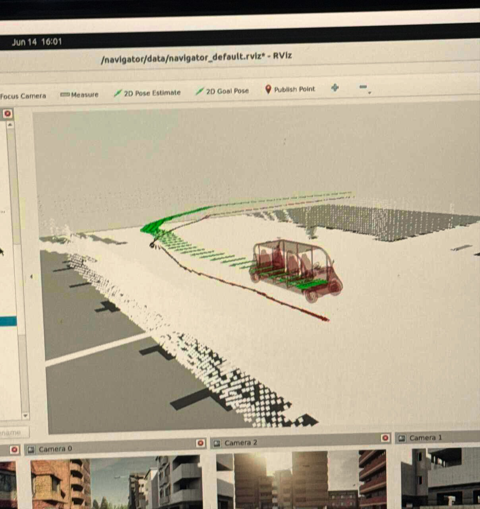

A ROS2 package that does offline SLAM, real-time map-based localization, and incremental map addition from one stack — validated to ~5 cm against GPS ground truth.

Localization (Red) vs Ground-Truth (Green, always-north-facing, z:0)I forked and extended KISS-ICP, KISS-SLAM, and Map-Closures so the same stack could do offline SLAM, real-time localization against a pre-built static map, and additive mapping — all from a single ROS2 package with three nodes (mapping, localization, map_addition).
The NOVA team needed localization against a pre-built static world map, not just the dynamic local maps the off-the-shelf KISS-* libraries produce. They also needed to start SLAM at a non-origin keypose (so maps stitch cleanly to an existing global map) and close the loop against that global map — not only against recent local scans.
Stock Map-Closures only matches recent local maps. I added a cv2.ORB detector whose params scale with point-cloud max dimension, injected the global map into the HBST with a negative ID, and branched KISS-SLAM to add a pose-graph edge straight to origin on a negative-ID match.
Overloaded KISS-SLAM init to accept an initial KeyPose from config, so maps centered elsewhere in the world stitch cleanly onto the pre-existing global map.
Overloaded KISS-ICP init and odometry to localize against a static world map rather than rebuilding a dynamic local map every frame.
Combining ICP with feature matching gave robust convergence and the sub-5 cm accuracy the team needed on bag-replayed data.